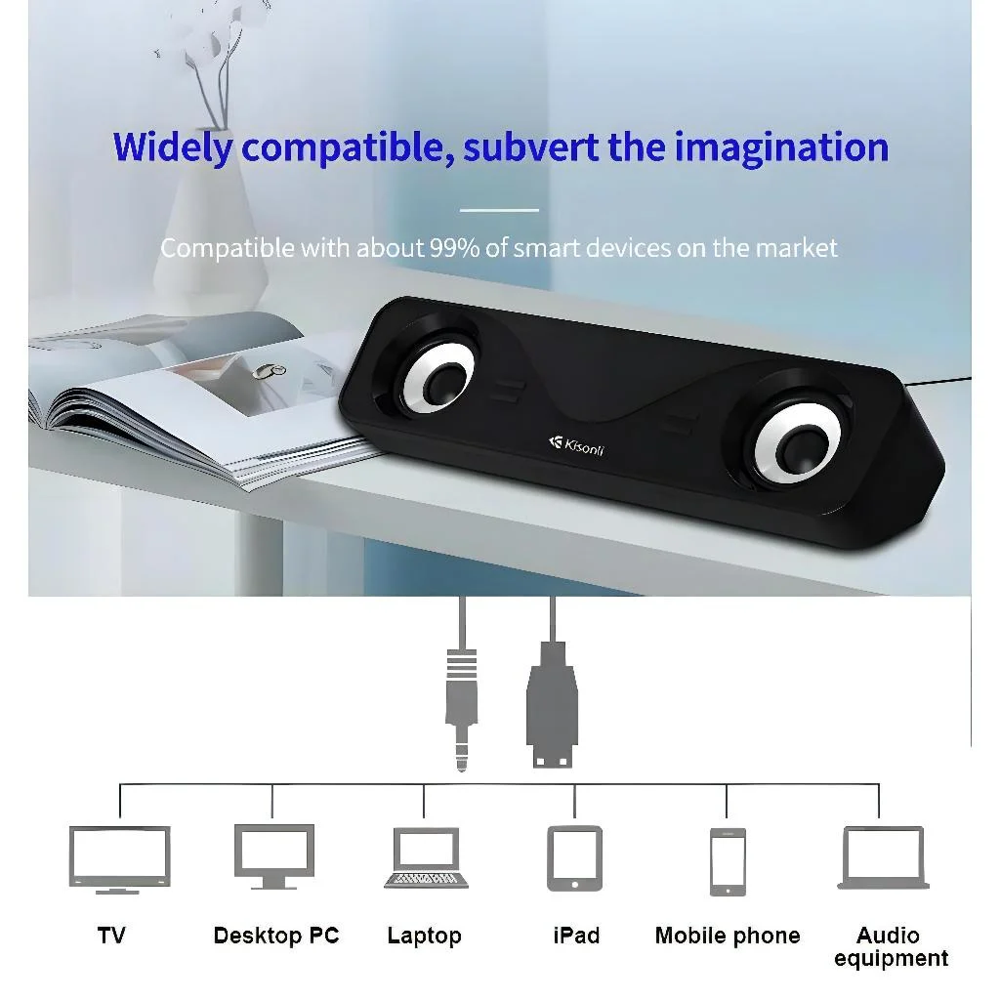

Best Bluetooth Speakers in Pakistan: Practical Shopping Guide

Looking for the best Bluetooth speakers in Pakistan? This practical shopping guide helps you navigate the options available on Sasta Milagaa. The category includes a range of audio devices, from soundbars to portable speakers, each designed for different listening needs. While some products are clearly labeled as Bluetooth speakers, others may have broader descriptions, such as "audio devices" or "electronic products." This guide focuses on real-world usability, highlighting features like battery life, connectivity, and portability. It also addresses delivery and return policies to help you make informed choices. Whether you're upgrading your home setup or looking for a portable option, this guide ensures you find the right fit for your daily audio needs.
Quick buying check: Match the actual item to your task, check its measurements or compatibility, and compare the full delivered price. Read the listing and policies before you order. The examples below are catalog evidence, not hands-on test results.
Key benefits of choosing Bluetooth Speakers carefully
- Better fit for your task: select the specification or design your situation needs.
- Clearer budget: compare the item, delivery and any required extras together.
- Fewer avoidable returns: resolve missing measurements and compatibility questions before ordering.
- More useful ownership: check how the item will be stored, cleaned and used.
Selection criteria and matching the actual task for Bluetooth Speakers
When selecting a Bluetooth speaker for use in Pakistan, focus on how well the product meets your specific needs. Consider the environment where it will be used—whether for home, outdoor, or travel. Check for features like battery life, water resistance, and sound quality that align with your intended use. Ensure the speaker is compatible with your devices and has reliable connectivity. Look for models that offer good value for money without compromising on essential functions.
Evaluate the reliability of the seller and the product’s performance based on user reviews and available data. Be cautious of exaggerated claims in listings and verify if the speaker meets your requirements. Consider factors like warranty, customer support, and return policies. These elements help ensure that the speaker you choose is both functional and dependable for your daily needs. Check if the seller offers cash on delivery, as this is a common preference in Pakistan.
Always compare the actual features and performance against your expectations. Avoid being swayed by marketing alone. Check for any limitations in the product’s capabilities that might affect your experience. Ensure that the speaker’s design and size fit your space and usage patterns. A well-matched speaker will provide better satisfaction and long-term usability. Consider how often you will use the speaker and whether it can handle your typical usage scenarios.
Fit, dimensions, compatibility or edition checks for Bluetooth Speakers
Fit is essential when choosing a Bluetooth speaker for use in Pakistan. Ensure the speaker size matches your intended space, whether for home use, travel, or outdoor events. Check the dimensions to confirm it fits in your bag, car, or room. Consider the weight if you plan to carry it frequently. A well-fitted speaker enhances usability and prevents damage from improper placement.
Compatibility is key for seamless performance. Verify that the speaker supports the Bluetooth version used by your devices. Check for additional features like NFC or voice assistant integration. Ensure it works with your phone, tablet, or laptop. Also, confirm if it has the right ports or connectivity options for your setup. Compatibility ensures a smooth user experience without technical issues.
Edition checks help you select the right model. Compare features across different models to find the best fit for your needs. Look for user reviews and ratings to understand real-world performance. Check for any regional variations or special editions available in Pakistan. This helps avoid purchasing a model that may not meet your expectations or have limited support. Some models may have different audio settings or firmware updates tailored for local markets.
Quality evidence and limitations of listing claims for Bluetooth Speakers
Quality evidence for listing claims about Bluetooth speakers in Pakistan includes verified user reviews, brand reputation, and technical specifications from reliable sources. Look for detailed descriptions of battery life, sound quality, and connectivity features. Check if the product has been tested in local conditions to ensure reliability. Avoid overreliance on marketing language without supporting data. Seek out independent testing reports or comparisons from local tech blogs or forums.
Limitations of listing claims often stem from incomplete or outdated information. Some listings may lack specifics on warranty, return policies, or after-sales service. Verify if the product is available in local stores or through trusted online platforms. Be cautious of exaggerated claims about performance or durability that are not backed by user experiences or expert evaluations. Some listings may not include details on water resistance, Bluetooth range, or compatibility with local devices.
Ensure that the information provided aligns with actual product availability and performance in Pakistan. Cross-check details with multiple sources and consider local user feedback. Avoid assumptions about product features or support based solely on online listings. Always refer to the most current and verified data when making purchasing decisions. Check for updates on product availability, pricing, and customer service policies. This helps in making informed choices and reduces the risk of dissatisfaction after purchase.
Budget tradeoffs and the full delivered cost for Bluetooth Speakers
Budget tradeoffs require careful evaluation of features versus cost. Prioritize essential functions like battery life, sound quality, and durability. Cheaper models may lack water resistance or long-range connectivity, which could lead to higher long-term costs. Consider how often the speaker will be used and in what environments to make informed choices. For example, a speaker used outdoors may need better waterproofing, while one for home use might prioritize audio clarity.
Full delivered cost includes shipping, taxes, and any additional fees. Some sellers may offer free delivery, while others charge extra. Check the total cost before purchasing to avoid surprises. Compare options from different retailers to find the best value. Be aware of return policies and delivery timelines to ensure a smooth buying experience. In Pakistan, delivery times can vary, so choose a seller with reliable logistics.
Avoid focusing solely on price. Look for reviews and user experiences to gauge real-world performance. Ensure the product meets your specific needs and fits within your budget. Balance cost with functionality to make a practical decision. Always verify the seller's reliability and customer service reputation before finalizing a purchase. Check for any warranty or support options that may be available. Be cautious of misleading claims in product listings and rely on verified information.
Setup, care, storage and useful ownership for Bluetooth Speakers
Setup for Bluetooth speakers in Pakistan should begin with reading the manufacturer’s instructions carefully. Place the device in a stable, dry location away from direct sunlight and moisture. Ensure the area has good ventilation to prevent overheating. Connect the speaker to a power source and pair it with your device using the Bluetooth settings. Avoid using the speaker in extreme weather conditions to maintain performance.
Care involves regular cleaning with a soft, dry cloth to remove dust and debris. Avoid using harsh chemicals or water, as they can damage the speaker’s components. Keep the speaker away from pets and children to prevent accidental damage. Store it in a cool, dry place when not in use. Handle the device gently to avoid internal damage from drops or impacts. Check for any signs of wear on the casing or ports.
Storage should be in a secure, dust-free environment. Use original packaging if available to protect the speaker during transport. Keep the speaker away from magnetic fields and extreme temperatures. Regularly check for any signs of wear or damage. Ensure the speaker is fully charged before long-term storage to prevent battery degradation. Avoid stacking heavy objects on top of the speaker. Store it in a location that is easily accessible for future use.
Common mistakes, arrival inspection and returns for Bluetooth Speakers
Common mistakes when buying Bluetooth speakers in Pakistan include overlooking battery life and water resistance. Many buyers focus only on price or brand, ignoring features that match their usage. Check for Bluetooth version and range to ensure compatibility with devices. Avoid assuming all speakers have the same durability or sound quality. Always read reviews from local users to understand real-world performance. Don’t skip verifying warranty terms and return policies before purchasing.
Arrival inspection is crucial to avoid issues later. Open the package carefully and check for physical damage. Confirm the product matches the order and all accessories are present. Test the speaker immediately to ensure it works as expected. If anything is wrong, document it with photos and contact the seller right away. Don’t delay inspection, as some sellers may refuse returns after a certain period.
Returns can be tricky, so understand the seller’s policy before buying. Some online stores offer returns within a specific timeframe, while others don’t. Check if returns are free or if you need to pay for shipping. If the product is defective, request a replacement or refund promptly. Avoid using the product excessively before returning it. Keep communication clear and polite with customer service.
Future changes and responsible shopping decisions for Bluetooth Speakers
Future changes in the Bluetooth speaker market will likely bring more advanced features like improved battery life, better sound quality, and enhanced connectivity options. As technology evolves, consumers in Pakistan should stay informed about these developments to make informed choices. Keeping an eye on trends can help identify when to upgrade or wait for better deals. Being proactive about future tech can lead to more satisfying purchases.
Responsible shopping decisions involve considering the long-term value of a Bluetooth speaker rather than just the initial price. Factors like durability, warranty, and customer support play a significant role in overall satisfaction. Choosing products from reputable brands with good after-sales service can reduce the need for frequent replacements. This approach supports sustainable consumption and better value for money. Buyers should also look for models with energy-efficient designs and eco-friendly materials where possible.
Consumers should also evaluate how a Bluetooth speaker fits into their lifestyle and needs. Whether for home use, outdoor activities, or travel, matching the product to specific requirements ensures better performance. Checking delivery options, return policies, and local support can prevent post-purchase issues. Making thoughtful choices based on real needs helps avoid unnecessary spending and ensures a more satisfying ownership experience.
A useful buying decision connects your actual task to a clearly described item. A category name, attractive photo or low headline price cannot replace checking what will arrive and whether it fits.
Illustrative Pakistan use cases for Bluetooth Speakers
Illustrative: compare a fixed PKR budget
A student with a fixed budget of 2000 PKR wants to compare full delivered costs for Bluetooth speakers. They check listings like the Music Wireless 8W Bluetooth Speaker P60 priced at 1594 PKR and calculate the 250 PKR delivery fee. They look for items over 5000 PKR to avoid the fee, but since most options are under, they consider the total cost including delivery. This helps them choose a speaker that fits their budget without unexpected charges.
Illustrative: check fit for shared home use
A family looking for a speaker to use in multiple rooms checks for compatibility and fit. They consider the 3 inches Wireless Bluetooth Speaker with Bluetooth 5.0, which connects easily via Bluetooth 5.0 and has a stable range. They ensure it works with their devices and fits in different spaces. The speaker’s portability and 360-degree rotation make it suitable for shared home use, offering flexibility for different activities.
Illustrative: plan delivery and arrival inspection
A person in a smaller town orders a Bluetooth speaker online and inspects it upon arrival. They choose the Kisonli I-610 USB Home Theater Soundbar Speaker, aware that delivery may take 3-6 working days. When it arrives, they check for damage and ensure it matches the description. They also note the 7-day return window in case it doesn’t meet their needs, making the purchase more secure despite the distance.
Comparison and evidence from actual catalog listings
The following listing snapshot was recorded at 2026-10-28 05:10:20 PKT. These are seller-provided descriptions, not independent performance tests. A category label does not confirm that an item suits every task discussed in this guide. Check the linked item for its current price, availability, measurements and included accessories.
| Listed item | Snapshot price | Listing evidence and limits |
|---|---|---|
| Kisonli I-610 USB Home Theater Soundbar Speaker - Audio Device Designed For Sound Playback And Daily Listening Routine | Rs 1,594 | Listing description: This Kisonli I 610 USB Home Theater Soundbar Speaker Provides A Reliable Solution For Audio Devices And Routine Sound Playback Needs. Formulated To Deliver Listening Benefits While Supporting Kisonli I 610 USB Home Theater Soundbar Speaker Utility, It Fits Seamlessly Into Your Regular Sound Playback Or Daily Regimen. Designed For Easy Operation And Convenient Use, Confirm any unspecified detail with the store. |
| Music Wireless 8W Bluetooth Speaker P60 - Electronic Product Designed For Audio And Daily Sound Routine (Random Color) | Rs 1,594 | Listing description: The Music Wireless 8W Bluetooth Speaker P60 Is An Electronic Product Formulated To Help Provide Audio And Daily Sound Utility During Use. Confirm any unspecified detail with the store. |
| 3 inches Wireless Bluetooth Speaker with Bluetooth 5.0 & LED Control | Rs 1,059 | Listing description: 3 inches Wireless Bluetooth Speaker with Bluetooth 5.0 & LED Control Enjoy rich stereo sound with deep bass and clear treble for music, movies, and podcasts. Connect easily via Bluetooth 5.0 with a stable range of up to 10 meters. Portable, lightweight design with up to 8–10 hours Confirm any unspecified detail with the store. |
Delivery and returns: Sasta Milaga currently lists Rs 250 delivery, free above Rs 5,000. Usual estimates are 2-4 working days in major cities and 3-6 elsewhere. Returns can be requested within 7 days; damaged or wrong items return free, while other returns cost Rs 250. Check delivery terms and return terms for current conditions.
Frequently asked questions about Bluetooth Speakers in Pakistan
How do I choose Bluetooth Speakers for my needs?
To choose Bluetooth speakers, consider your main use—like music, movies, or portability. Look for features like battery life, sound quality, and connectivity. Ensure the speaker fits your budget and meets your daily needs. Check if it supports Bluetooth 5.0 for better stability.
What should I check in the listing before ordering?
Before ordering, review the product description for key details like battery capacity, size, and connectivity options. Verify if the seller offers cash on delivery and check delivery fees. Ensure the return policy aligns with your expectations for damaged or wrong items.
How do I compare the full cost in Pakistan?
To compare full costs, add delivery fees to the listed price. Check if free delivery applies above a certain amount. Factor in return costs and potential extra charges. Use the seller’s policy to calculate total expenses accurately before purchasing.
How much is Sasta Milaga delivery and how long does it take?
Sasta Milaga currently lists Rs 250 delivery, with free delivery on orders above Rs 5,000. Usual estimates are 2-4 working days in major cities and 3-6 working days elsewhere. Read the linked delivery page for current conditions and allow for your specific address.
Can I return a damaged, wrong or unsuitable item?
The published return window is 7 days after delivery. Damaged or wrong items return free, while other returns carry a Rs 250 fee. Read the linked return policy, keep the packaging and report the issue promptly.
Are the product examples independently tested recommendations?
No. The examples are a dated snapshot of seller-provided catalog listings. We have not independently tested these items or verified customer outcomes. Prices and availability can change. Open each product page, compare the stated specifications with your needs and ask the store about missing details.
Conclusion
The best bluetooth speakers in Pakistan offer a range of options for different needs and budgets. While the listings provide basic product details and pricing, they lack in-depth reviews or performance data. Shoppers should focus on key factors like battery life, sound quality, and connectivity. Consider delivery fees and return policies before purchasing. For a reliable choice, look for well-known brands and check the seller's return guidelines. With careful evaluation, buyers can find a speaker that fits their lifestyle and requirements. Always verify product specifications and delivery timelines to ensure a smooth shopping experience.
Choose with a clear checklist. Browse Bluetooth Speakers and compare current listing details. Read how to order before placing a cash-on-delivery order. Take time to confirm the item fits your needs.
Tags: best bluetooth speakers in Pakistan, bluetooth speakers online Pakistan, buy bluetooth speakers online, bluetooth speakers price in Pakistan, bluetooth speakers comparison, bluetooth speakers shopping checklist, bluetooth speakers cash on delivery, how to choose bluetooth speakers for everyday use, what to check before buying bluetooth speakers online, compare bluetooth speakers with delivery costs in Pakistan, bluetooth speakers buying guide for Pakistani families, questions to ask before ordering bluetooth speakers with COD
More guides
Umrah travel checklist: documents, packing and planning
A practical Umrah checklist: passport and visa documents, what to pack for Makkah and Madinah, health preparation and booking tips.
Air conditioners (split) size fit compatibility Pakistan: Size, Fit and Compatibility Checklist
Compare Air Conditioners (Split) in Pakistan: listing details, fit and delivered costs. Read product, delivery and return information before ordering.
Academic books size fit compatibility Pakistan: Size, Fit and Compatibility Checklist
Compare Academic Books in Pakistan: listing details, fit and delivered costs. Read product, delivery and return information before ordering.